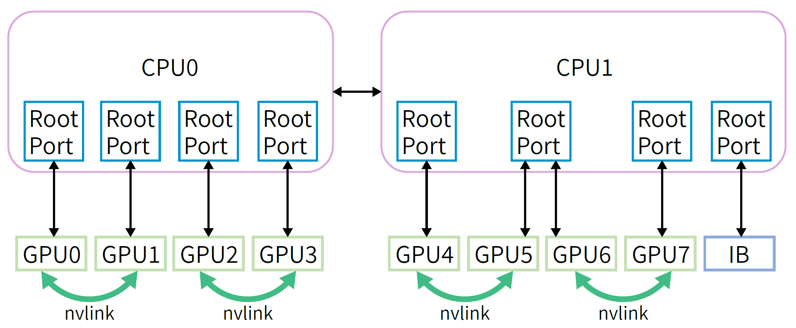
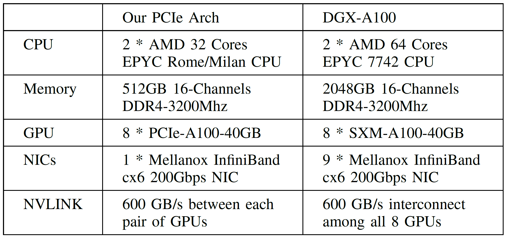
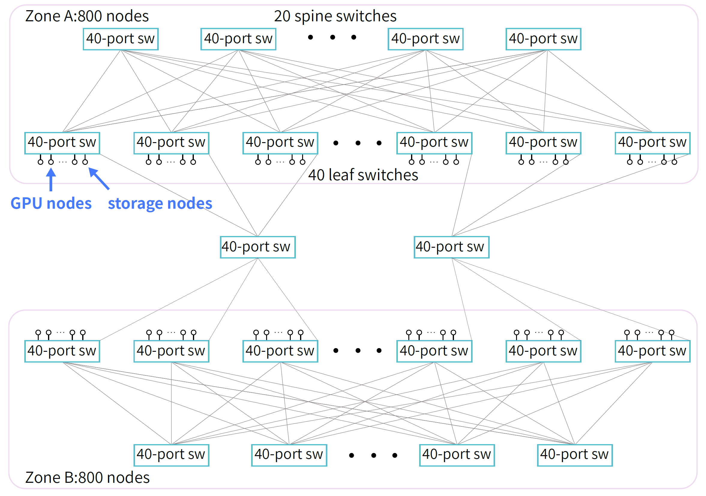
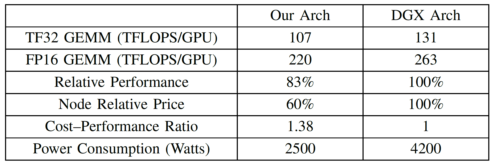
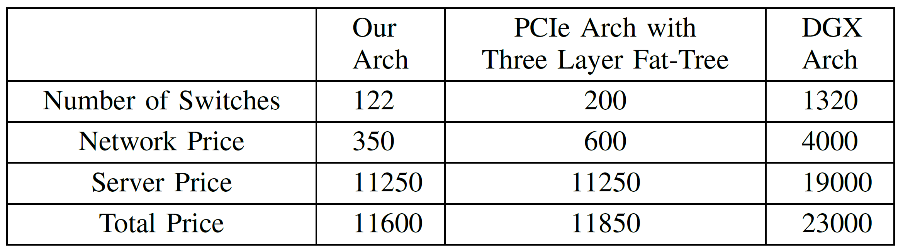
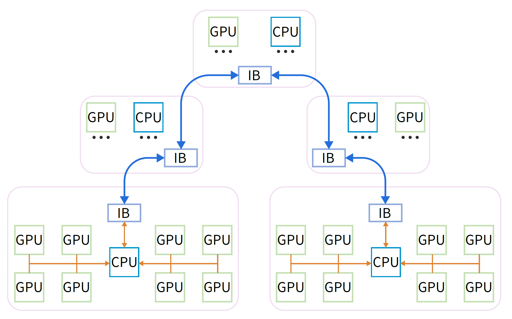
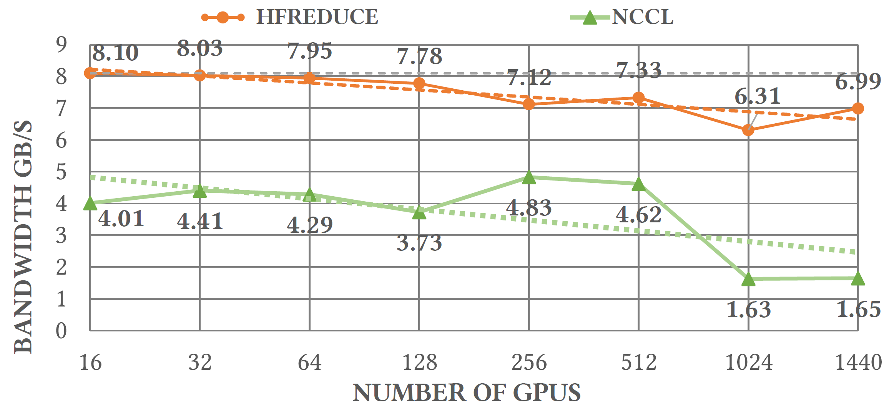
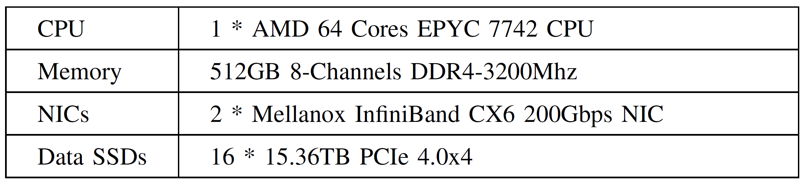

Fire-Flyer AI-HPC: A Cost-Effective Software-Hardware Co-Design for Deep Learning
SC ’24
gpu
llm
attention
memory
systems
Fire-Flyer AI-HPC
Background & Motivation
Challenges in Models Training
Training Efficiency
- Training a LLM demands thousands of GPUs and consumes substantial storage and network resources
- Achieving efficient training at massive magnitude is crucial
- Communication: training LLMs involves dividing models among GPUs that communicate extensively for progress.
- Operation optimization
- Data pre-processing
- GPU memory consumption
Training Stability
Meta reported an average of one failure per 3 hours while training Llama 405B model on a cluster containing 16,384 H100 GPUs.
- Stability is vital from a production standpoint as training a big model with a trillion tokens may span several weeks.
- In DL training, stragglers and hardware failures are common occurrences.
HPC and AI Clusters of This Era
- HPC Inadequacies for AI Training: traditional supercomputers like TianHe-2A focus on FP64 calculation and doesn’t support FP16.
- GPU based HPC: GPU-based supercomputers like Frontier and Summit utilize highperformance GPUs to tackle large-scale computations.
- High cost of specialized hardware
- Low energy efficiency
HPC and AI Clusters of This Era
- GPU Clusters of Large Companies: AI clusters from Meta, ByteDance and NVIDIA usually adopt an architecture similar to DGX.
- GPUs within each node are fully connected through NVLink switch.
- Nodes within each rack are fully connected through IB switch.
- Very high performance
- Very high cost

HPC and AI Clusters of This Era
- AI DSA Clusters: Google TPU cluster and Intel Habana Gaudi use accelerators highly tailored for efficient AI workloads.
- Weak software ecosystem compared to the maturity of NVIDIA’s offerings.
- Cloud Service Providers: AWS and Azure offer flexible and scalable resources for AI training.
- Significant accumulated cost: not good for long-term projects spanning around 2 years.
Challenges in AI infra
- Large-scale GPU cluster is needed
- Models are growing larger
- Researchers often need to train multiple models simultaneously
- Overall system construction cost
- TCO, power supply, cooling, networking, storage, disaster recovery
- High-performance
Design
Fire-Flyer 2 Cluster
PCIe A100 Computation Node Architecture

- 8 A100 PCIe GPUs and 1 CX6 IB NIC: directly connect to the CPU, without using a PCIe switch.
- IB NIC occupies a separate PCIe root complex, thus avoiding performance interference with the GPU.
- Use NVLink Bridge between each pair of GPUs instead of using NVLink switch
PCIe A100 Computation Node Architecture

- 8 A100 PCIe GPUs and 1 CX6 IB NIC: directly connect to the CPU, without using a PCIe switch.
- IB NIC occupies a separate PCIe root complex, thus avoiding performance interference with the GPU.
- Use NVLink Bridge between each pair of GPUs instead of using NVLink switch
Network Topology: Two-Layer Fat-Tree with Storage and Computation Integrated
- 1250 compute nodes containing 10000 A100 GPUs
- 200 storage nodes
- Fat-Tree topology for high bisection bandwidth
- Two-zone network with each zone two-Layer fat-tree for lower cost
- Less IB switches and less IB cables than a single-zone three-layer fat-tree

Cost Performance

- 83% performance of DGX
- 60% GPU cost and energy consumption of DGX
Cost Performance

HFReduce: Hardware-Software Co-Design in Network
- Allreduce operation is essential for aggregating gradients across GPUs.
- HFReduce is an allreduce library specially designed for Fire-Flyer 2.
- Suitable for Fat-Tree topology
- CPU
- Small data transfer optimization
- NUMA-awareness
Overview of HFReduce

- Intra-node reduction
- HFReduce asynchronously transfers data to CPU memory (Device-To-Host, D2H)
- Upon arrival of data, HFReduce performs reduction add operation using CPU vector instructions
- Inter-node reduction
- Double Binary Tree algorithm for inter-node allreduce using RDMA
- Finally, the CPU returns reduced gradients to GPU via PCIe (Host-To-Device, H2D)
Optimizations of HFReduce
- H2D transfer: optimized by GDRCopy to write data to 4 GPUs at once within the same NUMA node.
- GDRCopy allow GPUs to retrieve data from CPU caches without additional reads from host memory
- NUMA-awareness: D2H destination memory is interleaved across two NUMA nodes for maximum bandwidth
- Optimized CPU SIMD reduction computation for various data types FP32/FP16/BF16/FP8.
Advantages of HFReduce over NCCL
- Reduced PCIe Bandwidth Consumption
- NCCL’s ring reduction is not suitable for PCIe:
- 2n-1 PCIe in-bound and 2n-1 PCIe out-bound transmissions
- HFReduce only requires n-1 in-bound and out-bound PCIe transmissions
- NCCL’s ring reduction is not suitable for PCIe:
- No GPU Kernel Overhead
- NCCL’s allreduce operation requires GPU kernel execution, which can affect other computational kernels on the GPU.
- HFReduce uses GPU’s Copy Engine for PCIe transfer and CPU for reduction computation.
Reduce Performance

Bottlenecks of HFReduce
- HFReduce achieves 8GB/s allreduce bandwidth, lower than the theoretical bandwidth of 13.3GB/s
- GPU5 and GPU6 share the same PCIe root complex port, sharing the PCIe bandwidth of 37GB/s compared to 54GB/s of other pairs
HaiScale: Special Optimizations for DL Training
- HaiScale optimizes 4 kinds of parallelism
- Data Parallel (DP)
- Tensor Parallel (TP)
- Pipeline Parallel (PP)
- Expert Parallel (EP)
- TP is applied to each pair of NVLink-Bridged GPUs.
- DP is applied to 4 pairs of GPUs within each nod.
- PP is applied inter-node
3FS: High-Throughput Distributed File System
3FS components

- 3FS is specially designed for Fire-Flyer 2 AI cluster to fully utilize the high IOPS and throughput of NVMe SSDs and the RDMA network.
- Cluster managers: cluster configurations and sevice status
- Meta services
- File system meta data are stored in tables of a distributed key-value storage system.
- Strong consistency
- Storage services
- Chain Replication with Apportioned Queries (CRAQ)
- File content are split into chunks, which are replicated over a chain of storage targets.
- A chain table maintained by meta services contains an ordered set of chains.
- Fat-Tree topology
- Clients
- RDMA transfer
3FS-KV
- 3FS-KV is a shared-storage distributed data processing system built on top of 3FS
- Supporting 3 access models: Key-Value, message queues and object storage.
- KV context caching on disk
HaiPlatform
- HaiPlatform is a time-sharing scheduling platform for cluster resource management for developers
- The developer write platform coding rules to ensure that is can be a interruptable task:
- Accepting the interruption signal from the cluster;
- Saving checkpoints (model parameters, optimizer states, KV cache, etc)
- Ack to the cluster interruption
- Recovering from checkpoint and continue to run
Stability and Robustness
Checkpoint Manager
- Training LLMs can span several months, during which unavoidable hardware failures may cause training interruptions.
- Checkpoint Manager for second-level saving and loading:
- Parameters and optimization states are asynchronously transferred from GPU to CPU host memory
- They are further divided into chunks and written to 3FS using the 3FS batch write API
- During the saving process, each tensor is recorded with its index and the offset within the checkpoint for convenience of loading
Validator
- An automatic validator program runs weekly on nodes to verify:
- hardware frequency, link speed and status
- CPU stress and memory bandwidth
- GPU memory test
- GEMM test
- Allreduce test
- Storage node stress test